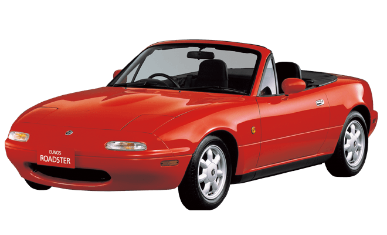

The MX-5 Miata is a symbol of Mazda’s car-making philosophy, “Jinba Ittai,” which means horse and rider as one and expresses the type of fun-to-drive roadster engineers have intended to build since day one of the vehicle’s inception. Since its debut in 1989, the model has consistently offered driving fun that can only be experienced in a lightweight sports car and because of this, it has won the admiration of people from various countries, cultures and age groups.